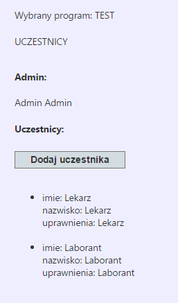

Po wybraniu opcji Uczestnicy dla danego programu wyświetli się panel użytkowników:

W nagłówku jest zawarta informacja, który program został wybrany (jego akronim oraz - w przypadku programu archiwalnego - status archiwalny).
W części Admin jest wyświetlane imię i nazwisko użytkownika, który jest administratorem programu (stworzył go).
W części Uczestnicy są wyświetlane dane personalne (imię i nazwisko) użytkowników, którzy zostali dodani przez administratora do programu wraz z ich rolą.
Created with the Personal Edition of HelpNDoc: Full-featured EBook editor